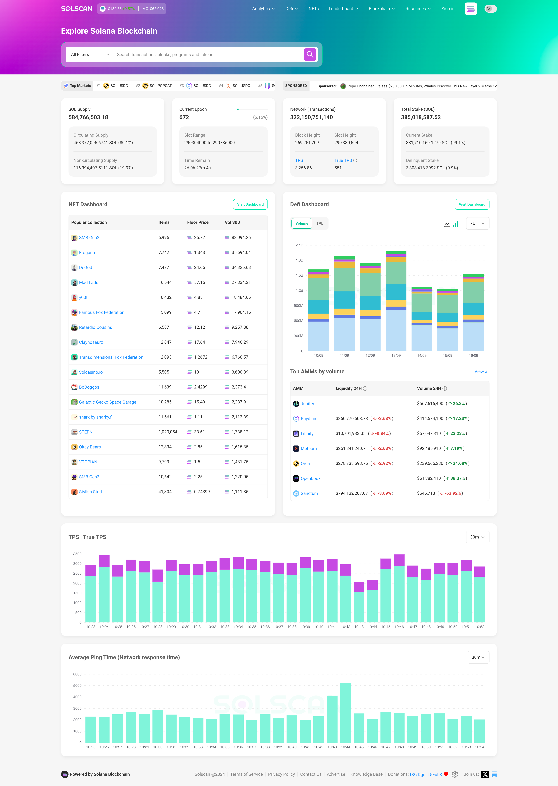

No Code Website Builder
As the Solana blockchain continues to gain traction within the cryptocurrency and decentralized finance (DeFi) communities, the need for reliable, real-time data becomes increasingly important. Enter Solscan, a powerful blockchain explorer tailored specifically for the Solana ecosystem. Solscan offers users the ability to track transactions, review token information, and gain valuable insights into the Solana blockchain. In this blog, we will delve into the features, benefits, and overall significance of Solscan in navigating the rapidly evolving Solana landscape.
Solscan is a blockchain explorer designed for the Solana blockchain, providing users with an intuitive platform to explore and analyze blockchain data. Launched in 2021, Solscan allows users to view transactions, account balances, token holdings, and various other metrics associated with the Solana network. By offering a comprehensive suite of tools, Solscan empowers users to make informed decisions while interacting with the Solana ecosystem.
Key Features of Solscan
Transaction Tracking: Solscan enables users to track individual transactions in real time. Users can input transaction hashes to view details such as transaction status, timestamps, and fees.
Account Information: Users can explore comprehensive account details, including balances, types of tokens held, and transaction history, providing insights into a specific wallet’s activities.
Token Analytics: Solscan offers detailed information about various tokens on the Solana blockchain, including price data, market capitalization, and trading volumes. This feature is crucial for investors looking to analyze potential investments.
Smart Contract Insights: Users can view information related to smart contracts deployed on Solana, including code, interactions, and transaction histories.
Decentralized Application (DApp) Monitoring: Solscan tracks DApps operating on the Solana blockchain, allowing users to monitor their performance and user engagement metrics.
Validator Performance: The platform provides insights into the performance of validators on the Solana network, including uptime, stake amounts, and rewards distribution.
User-Friendly Interface: Solscan’s intuitive design ensures that both newcomers and experienced users can easily navigate the platform and access important data.
Cross-Platform Compatibility: Accessible via web browsers, Solscan can be used on various devices, making it convenient for users to check blockchain data on the go.
Enhanced Transparency
One of the key advantages of using Solscan is the transparency it offers. Blockchain technology is built on the principles of openness and accountability, and Solscan embodies these values by providing users with access to real-time data. This transparency is essential for building trust within the Solana community and ensuring that users can verify transactions independently.
Informed Decision-Making
For traders and investors, having access to accurate and up-to-date information is crucial. Solscan equips users with the necessary tools to analyze transactions, monitor token performance, and keep track of their investments. By leveraging Solscan’s analytics, users can make informed decisions and execute strategies based on real-time data.
Simplifying Complex Data
The Solana blockchain generates vast amounts of data daily, making it challenging for users to navigate without proper tools. Solscan simplifies this complexity by presenting data in a user-friendly format, allowing users to effortlessly access the information they need. Whether you’re a developer looking to analyze smart contracts or a trader tracking your investments, Solscan streamlines the process.
Community Engagement
Solscan plays a vital role in fostering community engagement within the Solana ecosystem. By providing insights into transaction volumes, popular tokens, and DApp usage, the platform encourages users to participate actively in the community. This engagement helps drive the growth and adoption of the Solana blockchain.
Step 1: Accessing Solscan
To get started with Solscan, simply visit the Solscan website. The platform is accessible via web browsers, so you can use it on both desktop and mobile devices.
Step 2: Exploring Transactions
To track a specific transaction, enter the transaction hash in the search bar. This will pull up detailed information regarding the transaction, including its status, timestamp, block height, and fees.
Step 3: Viewing Account Information
To check account balances and transaction history, enter the wallet address in the search bar. This will display all relevant information, including all tokens held and their respective balances.
Step 4: Analyzing Tokens
For those interested in specific tokens, navigate to the "Tokens" section. Here, you can search for tokens by name or symbol to view price information, market capitalization, and trading volumes.
Step 5: Monitoring Validators
To evaluate the performance of validators, head to the "Validators" section. You can view key metrics such as stake amount, uptime, and rewards distribution, helping you make informed decisions when choosing a validator for your staking activities.
Step 6: Exploring DApps
If you’re interested in decentralized applications, Solscan provides a DApp monitoring feature. You can explore various DApps, view their transaction volumes, and analyze user engagement metrics.
Supporting Developers
For developers building on the Solana blockchain, Solscan serves as an invaluable resource. The platform provides insights into smart contracts, allowing developers to analyze their code and assess interactions. This transparency fosters a culture of accountability, ensuring that developers can optimize their applications for better performance.
Enhancing User Experience
As more users flock to the Solana blockchain, providing a seamless user experience becomes paramount. Solscan enhances this experience by offering a centralized location for accessing blockchain data. Users can easily track transactions, monitor investments, and explore new tokens, all in one place.
Promoting Decentralization
One of the core tenets of blockchain technology is decentralization. Solscan embodies this principle by enabling users to access information independently. This reduces reliance on centralized entities and promotes a more decentralized ecosystem where users can verify transactions and monitor their assets.
Driving Adoption
By facilitating easier access to blockchain data, Solscan plays a crucial role in driving the adoption of the Solana blockchain. As users become more comfortable with navigating the ecosystem, they are more likely to engage in trading, investing, and participating in DeFi activities.
Enhanced Analytics Tools
As the Solana ecosystem continues to grow, Solscan plans to introduce advanced analytics tools that provide deeper insights into transaction patterns, user behavior, and token performance. These tools will empower users to make even more informed decisions.
Improved User Experience
Solscan is committed to continuously improving its user interface and experience. Future updates may include personalized dashboards, advanced search filters, and enhanced visualizations to help users better understand the data they are accessing.
Community Features
To foster further community engagement, Solscan is exploring the integration of social features that allow users to share insights, discuss trends, and collaborate on investment strategies. This will help build a stronger community around the Solana ecosystem.
Cross-Chain Compatibility
As the DeFi space evolves, cross-chain interactions are becoming increasingly important. Solscan is considering adding features that allow users to track assets and transactions across multiple blockchains, enhancing its utility as a comprehensive blockchain explorer.
Blockchain explorers are vital tools in the world of cryptocurrency, providing transparency, security, and easy access to important data related to blockchain transactions, smart contracts, token transfers, and more. As the cryptocurrency and decentralized finance (DeFi) ecosystem grows, so does the importance of such explorers for different blockchains. For Solana, one of the fastest-growing and highly scalable blockchain platforms, Solscan has emerged as the go-to blockchain explorer, offering users a reliable interface to explore the Solana network’s data in real-time.
In this article, we will take a deep dive into Solscan, its features, functionalities, and significance in the broader blockchain ecosystem. We will explore how it works, its features for developers and users, its role in the Solana DeFi ecosystem, and its future in an increasingly multi-chain world.
What is Solscan?
Solscan is a blockchain explorer and analytics platform designed specifically for the Solana network. Similar to how Etherscan serves as the blockchain explorer for Ethereum, Solscan allows users to track transactions, monitor token transfers, check wallet balances, explore smart contracts, and analyze network statistics on Solana’s high-performance blockchain.
Launched in 2020, Solscan quickly became one of the most widely used and trusted Solana explorers due to its user-friendly interface and comprehensive data visualization features. Solscan provides an intuitive and transparent way for users and developers to interact with the Solana blockchain, making it one of the most important tools in the ecosystem.
The Importance of Solana and Solscan
Before diving into the features of Solscan, it’s crucial to understand the context in which it operates. Solana, launched by the Solana Foundation in 2020, is a high-performance blockchain designed to scale without compromising decentralization. Its key innovation lies in its consensus mechanism, Proof of History (PoH), which allows it to process thousands of transactions per second (TPS) at a fraction of the cost of Ethereum or Bitcoin.
The network’s scalability and speed have made Solana a popular choice for developers building decentralized applications (dApps), especially in sectors like decentralized finance (DeFi), non-fungible tokens (NFTs), and Web3 applications. Given the complexity and speed of the Solana blockchain, having a tool like Solscan is essential for interacting with the network.
Solscan enhances the Solana ecosystem by offering a user-friendly interface to monitor and verify network activity. Whether you are a developer building on Solana, a trader tracking your token balances, or a user exploring the blockchain’s data, Solscan helps bridge the gap between the Solana network and its community.
Key Features of Solscan
Solscan’s functionality extends beyond basic transaction tracking. It offers a range of features that cater to both casual users and advanced developers. Let’s explore the key features of Solscan.
1. Transaction Lookup
One of the primary features of Solscan is its transaction lookup tool. Using a transaction hash (TX hash), users can track the status of any transaction on the Solana blockchain. Whether it's a transfer of SOL tokens, a smart contract interaction, or a token swap, users can verify details like the sender and receiver addresses, the number of tokens transferred, transaction fees, timestamps, and the confirmation status.
Transaction lookup is particularly valuable for users who wish to confirm the status of their transactions or identify any failed transactions. Additionally, Solscan provides an easy-to-understand interface that displays transaction confirmations and the block height at which the transaction was included.
2. Block Explorer
Solscan offers a detailed block explorer, which allows users to explore recent blocks on the Solana blockchain. This feature displays important information about each block, including block height, block hash, the number of transactions within the block, and the validator that proposed the block. By clicking on any block, users can drill down to see all associated transactions.
Given Solana's high throughput, it’s important for users to easily access information about the network’s current state. Solscan’s block explorer makes it simple to track the latest blocks, helping users and developers understand how the network is functioning in real-time.
3. Token Tracking and Analytics
Solscan allows users to track a wide range of tokens on the Solana network. Similar to Ethereum’s ERC-20 tokens, Solana has its own set of tokens, many of which are created using the SPL token standard. Users can search for a token by its contract address, name, or symbol to see detailed information such as:
Total supply
Market capitalization
Transfer volume
Number of token holders
The latest transfers of that token
Solscan’s token tracking feature is particularly useful for traders, investors, and users who want to monitor token performance or check their balances in real-time. Additionally, the platform provides detailed charts and graphs that showcase historical token prices, allowing users to analyze trends and make informed decisions.
4. Wallet and Address Lookup
Another crucial feature of Solscan is the wallet and address lookup tool. By entering a Solana wallet address, users can access the transaction history, token balances, and associated activities of that address. This tool provides complete transparency and is particularly useful for those who want to track the activity of their own wallets or investigate the behavior of others.
Solscan displays the balances of native SOL tokens as well as any SPL tokens held by the wallet. It also shows a breakdown of transactions, including the amount of SOL or tokens transferred, the sender and receiver addresses, and transaction timestamps.
5. Smart Contract Explorer
Solscan enables users to explore deployed smart contracts on the Solana blockchain. Users can search for a contract by its address and interact with the contract directly from the explorer. This feature is incredibly useful for developers who want to inspect smart contracts, verify their code, and monitor interactions with the contract.
In addition to the contract code, Solscan also provides a list of all transactions that have interacted with the contract, allowing developers to trace any errors or issues that may arise from using the contract.
6. Validator Information
Validators play an essential role in maintaining the security and integrity of the Solana blockchain. Solscan provides detailed information about validators, including their performance, stake, and ranking within the network. This feature is especially valuable for those participating in staking or looking to delegate their tokens to a particular validator.
Users can view each validator’s uptime, commission rate, and rewards, helping them make informed decisions about staking their SOL tokens. Solscan also tracks validator performance over time, offering a comprehensive view of how each validator is performing relative to others.
7. Network Statistics and Analytics
Solscan provides real-time network statistics that offer insights into the overall health and performance of the Solana blockchain. Some of the key metrics include:
Transactions per second (TPS): Solana is known for its high throughput, and Solscan provides real-time data on the number of transactions being processed.
Active addresses: The number of unique wallet addresses interacting with the Solana network.
Network latency: A measure of the time it takes for a transaction to be processed.
Validator distribution: Insights into how Solana’s validators are spread across different regions and their respective stake.
This data is essential for developers, analysts, and users who want to keep an eye on the network’s performance and make data-driven decisions.
8. NFT Tracking
Solscan also supports tracking Non-Fungible Tokens (NFTs) on the Solana blockchain. Given Solana's growing presence in the NFT space, this feature has become increasingly popular. Users can track NFTs by their mint addresses, and Solscan provides detailed metadata for each token, including its creator, ownership history, and transfer history.
Solscan for Developers
While Solscan’s user interface is designed to be accessible for anyone, it also offers a range of advanced tools for developers. Solana is a developer-centric blockchain that allows for the creation of high-performance dApps, DeFi protocols, and NFTs. Solscan’s developer tools are designed to help developers build, test, and troubleshoot their applications.
1. APIs
Solscan provides a comprehensive API suite that allows developers to programmatically access blockchain data. The APIs are designed to fetch data on transactions, addresses, blocks, tokens, and more. This makes it easy for developers to integrate Solana blockchain data into their own applications or tools.
2. Contract Verification
Solscan allows developers to verify their smart contracts on the platform. By submitting the contract code for verification, developers can ensure that their contracts are publicly accessible and transparent, which is essential for building trust in the Solana ecosystem. Verified contracts are marked with a special badge on Solscan, making them more credible.
3. Smart Contract Interaction
For developers who want to interact with deployed smart contracts, Solscan provides an interface that allows direct interaction. Developers can call contract functions, send transactions, and test smart contract behavior directly from the Solscan platform. This feature is incredibly useful for debugging and testing contracts before they go live on the mainnet.
Solscan’s Role in the Solana Ecosystem
As Solana continues to gain adoption across various sectors, Solscan’s role as a blockchain explorer and analytics tool becomes even more critical. It serves as a bridge between the complex Solana network and its growing user base, offering transparency and tools for interacting with the blockchain in real time. In an ecosystem as fast-paced and active as Solana’s, Solscan ensures that users, developers, and investors can make informed decisions based on reliable and accessible data.
1. Enhancing Transparency
Transparency is one of the most important aspects of blockchain technology, and Solscan plays a crucial role in ensuring the Solana network is transparent. By offering real-time access to transaction data, wallet balances, smart contract interactions, and more, Solscan helps users verify that transactions and activities on Solana are legitimate and trustworthy.
2. Fostering Adoption of Solana
Solscan also contributes to the adoption of the Solana network by providing an easy-to-use interface for exploring the blockchain. As Solana’s popularity continues to grow, having a reliable and user-friendly explorer like Solscan makes it easier for new users and developers to join the ecosystem and interact with the network.
3. Supporting DeFi and NFTs
The rise of decentralized finance (DeFi) and non-fungible tokens (NFTs) on Solana has been one of the key drivers of the network’s growth. Solscan’s token tracking, NFT tracking, and transaction analytics features are essential for users and developers in the DeFi and NFT spaces. Whether you are an investor tracking DeFi token prices or an NFT creator verifying your tokens, Solscan is a vital tool for navigating the Solana ecosystem.
The Future of Solscan
As the Solana network continues to scale, Solscan is poised to evolve with it. The following trends are likely to shape Solscan’s future:
1. Multi-chain Support
Given the growing trend of multi-chain interoperability, Solscan may expand its capabilities to support other blockchains beyond Solana. By integrating with other layer-1 blockchains or layer-2 solutions, Solscan can offer a comprehensive multi-chain explorer for a broader audience.
2. Enhanced Analytics and Insights
As the DeFi and NFT sectors grow, Solscan is likely to provide even more advanced analytics tools. Features like price charts, staking rewards, and deeper insights into dApp usage could become essential components for Solscan users.
3. Developer-Centric Tools
To keep pace with the growing Solana developer community, Solscan will likely continue to expand its suite of developer tools. Enhanced smart contract debugging, more APIs, and support for emerging technologies like decentralized oracles could play a crucial role in Solscan’s evolution.
Conclusion
Solscan is an essential tool for anyone interacting with the Solana blockchain, offering a comprehensive and user-friendly platform for exploring network data. Whether you’re a casual user, a trader, a developer, or an investor, Solscan provides the transparency and functionality needed to make informed decisions in the Solana ecosystem.
As Solana continues to rise as one of the leading blockchains in the crypto space, Solscan will remain a critical resource for users and developers alike. By providing real-time data, transaction verification, and developer tools, Solscan helps to make the Solana network more accessible, secure, and trustworthy. As the blockchain ecosystem grows and evolves, Solscan’s role in supporting transparency, DeFi, NFTs, and developer adoption will only become more crucial.
Solscan stands as an essential tool for anyone navigating the Solana blockchain. By providing a user-friendly interface and access to crucial data, Solscan empowers traders, developers, and investors alike to make informed decisions. Its role in promoting transparency, enhancing user experience, and driving adoption cannot be overstated.
As the Solana ecosystem continues to expand, Solscan will undoubtedly evolve alongside it, providing users with the tools they need to thrive in the rapidly changing landscape of decentralized finance. Whether you’re a newcomer looking to explore the world of Solana or an experienced user seeking detailed insights, Solscan is your go-to resource for all things related to the Solana blockchain. With its commitment to community engagement and continuous improvement, Solscan is poised to remain a vital player in the Solana ecosystem for years to come.
No Code Website Builder